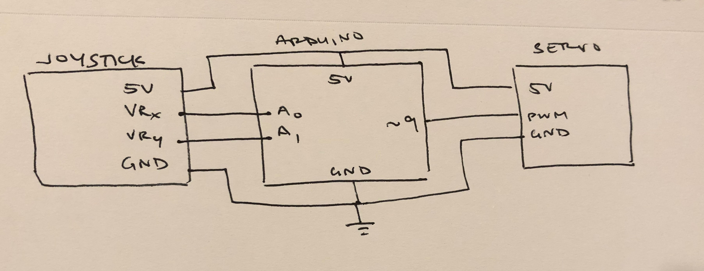

Assignment 5: Motors
Circuit operation

This circuit adjusts the servo's position based off of a read input from the joystick's position.
Button and servo schematic

Code snippet
I justified using the values for my map because when reading my joystick's position from the serial monitor, a consistent high value was 670, while a consistent low value was 0. These values created the bounds for my map, and plotted them to a 0-180 degree spinning radius of the servo motor.